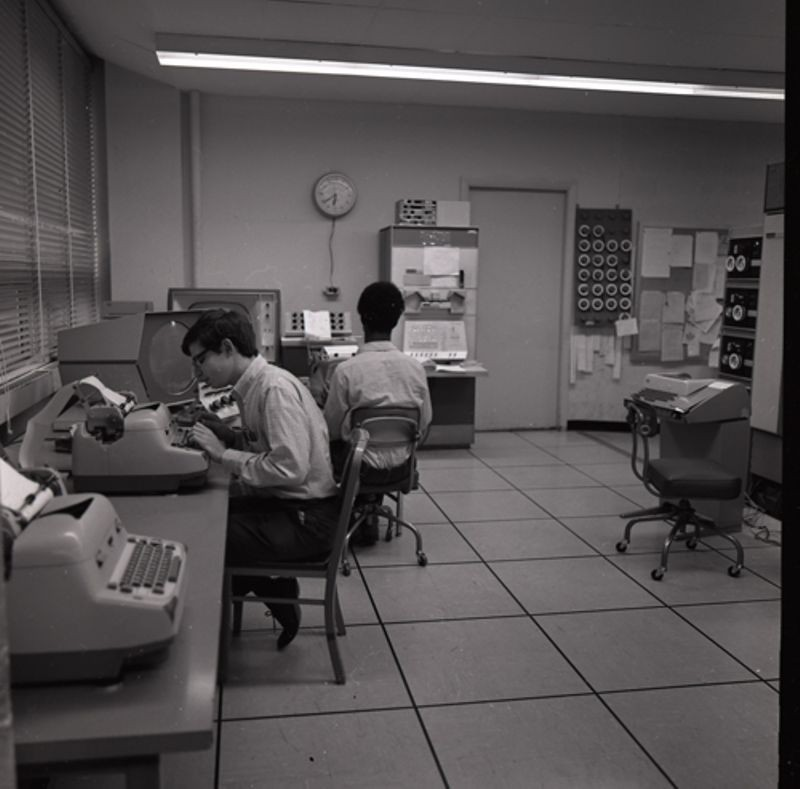
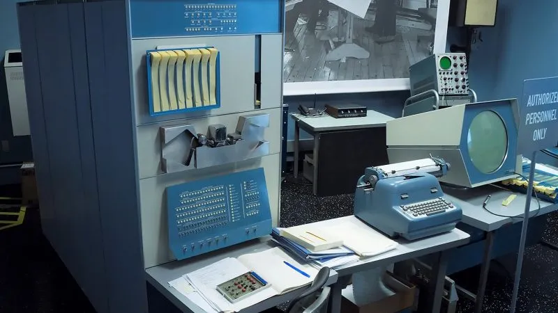
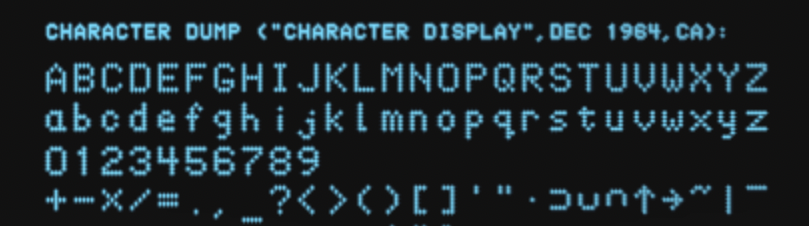
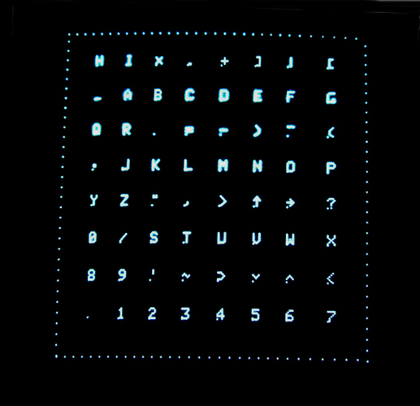
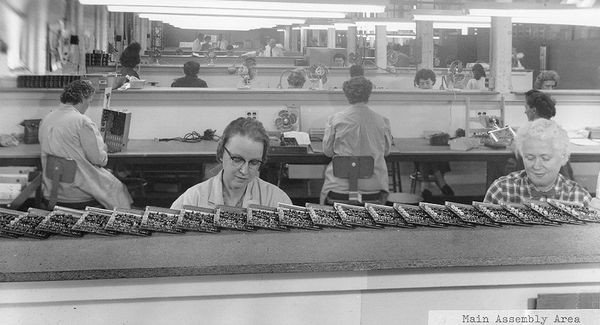
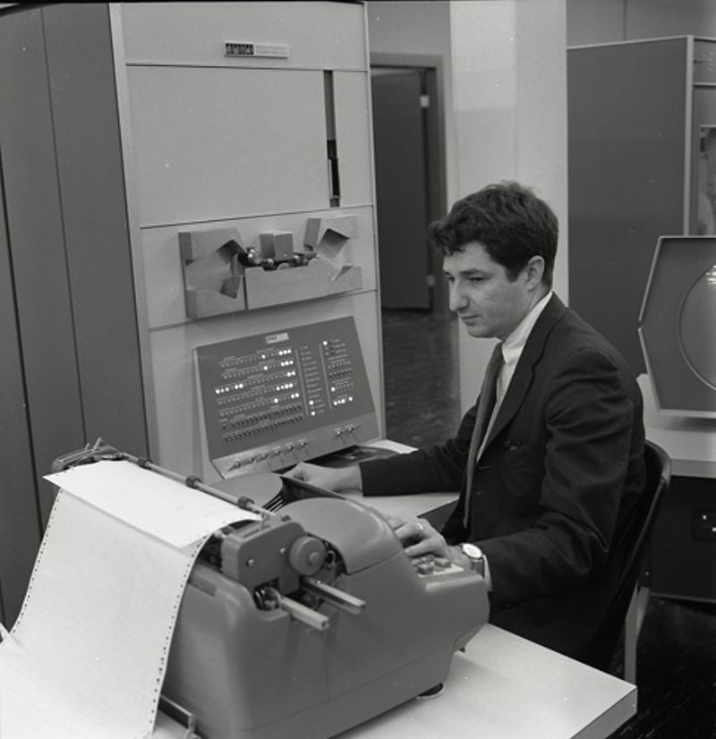

The PDP-1: the machine Spacewar! was written for

A new kind of machine
The PDP-1 (Programmed Data Processor-1) was the first computer built by the Digital Equipment Corporation, first produced in 1959 and shipped from 1960. Its lead engineer was Benjamin Gurley, and its design descended directly from the TX-0 and TX-2 machines at MIT's Lincoln Laboratory, the transistorised, interactive computers on which much of MIT's hacker culture had already formed. Where the dominant machines of the 1950s were batch-processing mainframes run by operators behind glass, the PDP-1 was comparatively small, fully transistorised, and meant to be sat at and used directly. At roughly US$120,000 it was a fraction of a mainframe's price, though, as Kuhfeld's Analog readers were reminded, still "about a quarter of a mega-buck". Only 53 were ever built, production ending in 1969.
| First produced | 1959 (shipped from 1960) |
|---|---|
| Maker | Digital Equipment Corporation (DEC) |
| Lead engineer | Benjamin Gurley |
| Word length | 18 bits |
| Memory | 4,096 18-bit words standard, upgradable to 65,536 (about 9 KB, or roughly 144 KB fully expanded, a fraction of a single modern megabyte) |
| Memory cycle | 5.35 microseconds (≈187 kHz) |
| Instruction speed | most instructions 10.7 µs (≈93,000/sec) |
| Logic | 2,700 transistors, 3,000 diodes |
| Weight | about 730 kg (1,600 lb) |
| Price | about US$120,000 |
| Units built | 53 (to 1969) |

The display that made the game possible
The single most important component for Spacewar! was the optional Type 30 Precision CRT display. It was a point-plotting screen: the program named an X and a Y coordinate and the hardware lit a single dot at that location. It could address a grid of 1024 by 1024 points, of which roughly 512 along each axis were individually distinguishable on the tube, at about 20,000 points per second, on a 16-inch tube coated in P7 phosphor. P7 is a long-persistence phosphor with two layers: a bright blue flash as the beam strikes, fading to a slow green afterglow. This is why the game looks the way it does. There are no lines on the screen, only dots, redrawn fast enough to read as ships and torpedoes, and the slow green decay is what leaves the faint trails behind moving objects and gives the star field its glow. The "heavy star" at the centre of the game is literally a single bright point, jittered and redrawn many times a frame, smeared into a sun by the phosphor itself.
To draw anything at all, the program had to do it continuously, plotting every object on every pass through a tight display loop, because nothing on the screen persisted for long. Spacewar! is, at bottom, that loop: compute positions, plot points, repeat.
More on the Type 30 and DEC's other displays, the light pen and the P7 phosphor ›
The console
Programs lived on fanfold punched paper tape, read in through a photoelectric tape reader and punched back out the same way; a single roll of tape was the distribution medium, the backup, and the archive all at once. This is why so much of the game's history is a history of tapes, copied, carried, lost and occasionally rediscovered. The operator's console carried a bank of sense switches and toggles and an adapted IBM Model B electric typewriter for printed output; offline, programs and listings were prepared on Friden Flexowriters using DEC's FIO-DEC character code.
The earliest Spacewar! was played from those console toggle switches, which were awkward and exposed players' hands to the warmth of the machine, until Alan Kotok and Bob Saunders built the famous detached control boxes so the players could sit back from the console. The shape of the game's controls, rotate left, rotate right, thrust, fire, hyperspace, is a direct response to the switches the PDP-1 actually offered, and a vast improvement for playability.
How the PDP-1 lettered itself


Drawn dot by dot from the original BBN-37 glyph table, two 18-bit words per character (a 5×7 dot pattern), the same data the PDP-1 plotted. Lowercase, digits and a little punctuation only, as on the machine. BBN-37 is one of several PDP-1 character generators of the period, shown here to demonstrate how the machine plotted characters; it is not Spacewar!'s own font. The game's on-screen text, its score display, was a separate routine (added by Preonas in 1963, later reworked by Samson). Routine by Ben Gurley and Welden Clark (DEC/BBN, 1961); glyph data after masswerk.at/spacewar/chargen.
How it reached the hackers

It is worth remembering who actually built these machines. DEC's computers, including the PDP-1, were assembled in large part by women on the production line in Maynard, Massachusetts, a workforce mostly written out of the accounts of the period. The same erasure runs through the Spacewar story itself, which is why this project keeps a record of the women at Digital alongside the named hackers.
From one machine to many users

Source: Computer History Museum, Oral History of Ed Fredkin, interviewed by Gardner Hendrie, 5 July 2006 (CHM ref. X3641.2007).
More than a calculator
The PDP-1 was never only a calculator. In the hands of the Tech Model Railroad Club hackers it drew the first video game and played four-part harmony, and few people did more to make it do both than Peter Samson, who added the Expensive Planetarium starfield to Spacewar! and wrote the PDP-1's music software. In this Computer History Museum oral history he looks back over a life in electronics, music and computation: building rudimentary computers from pinball relays as a boy, the Tech Model Railroad Club and the TX-0, the Harmony Compiler, and on to the Systems Concepts Digital Synthesizer (the "Samson Box") at Stanford's CCRMA, the Stanford AI Lab and Autodesk. It is a first-hand account of the culture that produced the game, by one of the people who built it.
The hardware is part of the text
For a Critical Code Studies reading, the PDP-1 is not background colour; it is part of the text. The 18-bit word sets the precision of the orbital arithmetic. The point-plotting display dictates that the game be a redraw loop and gives the ships their flicker and the sun its smear. The paper-tape workflow explains both how the game spread and how easily it was lost. The toggle-switch console shapes the controls. To read Spacewar!'s code closely is repeatedly to find the machine showing through it.
Where it comes from
- Specifications after the standard PDP-1 references, including the PDP-1 summary and DEC's own handbooks.
- Computer History Museum, PDP-1 Restoration Project, for the machine, the Type 30 display and the MIT context.
- Norbert Landsteiner, Inside Spacewar!, masswerk.at, on the Type 30, the display loop and the "heavy star".
- Steven Levy, Hackers: Heroes of the Computer Revolution, for the TX-0, the MIT donation and the control boxes.